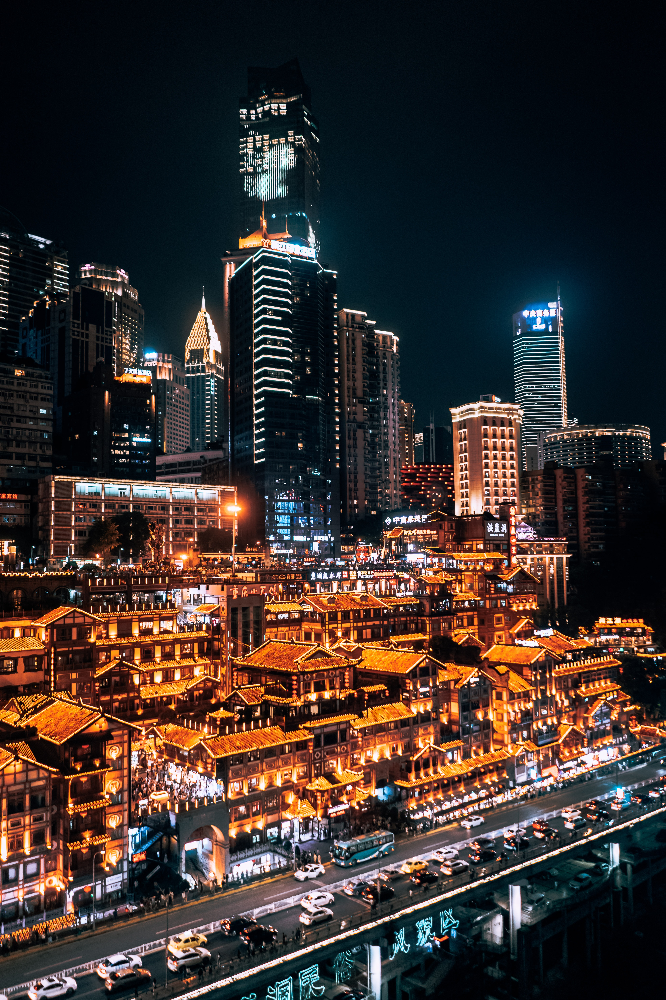
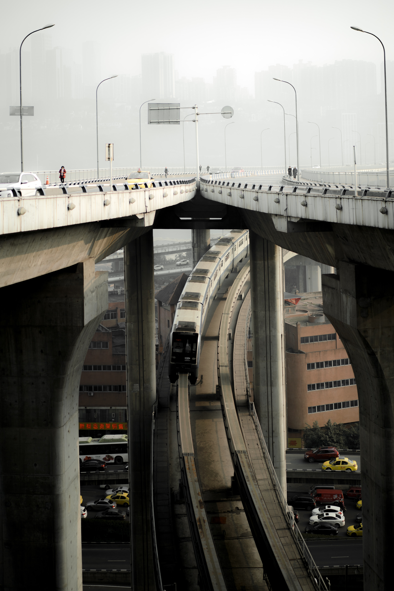

Hongya Cave är ett centralt landskapsprojekt i Chongqing, med ett konstruktionsområde på 46 000 kvadratmeter. De viktigaste natursköna platserna består av stilbyggnader, antika kommersiella gator och andra landskap. Det finns 11 våningar i Hongya Cave. På natten tänds lamporna klockan 6 på kvällen och lamporna släcks klockan 10 på kvällen. Du kan besöka de gamla gatorna för att uppskatta Bayu-kulturen, se sammanflödet av de två floderna och smaka på världens mat.

Caiyuanba Yangtze River Bridge är den sjunde bron över floden i huvudstadsområdet Chongqing. Bron har en total längd på 1 651 meter och en höjd på 114 meter. Det är den högsta bron över Yangtze-vattenytan Flod. Det är den här bron som byggdes 2007. När den är färdig har den satt tre världsprioriter: en stålbåge med 420 meters spännvidd, den längsta i världen och världens första dubbla stadsbro för vägar och ljusskenor. (Det är också Kinas mest avancerade "highway and light rail" dual-purpose bridge), världens första bro installerad med en kabelkran.

Chongqing är känt som en 8D-stad. Det finns himmelbroar mellan byggnaderna. Du kanske tror att du befinner dig på 20: e våningen, men när du går ut kommer du att upptäcka att du faktiskt befinner dig på första våningen. Fantastiskt, eller hur?